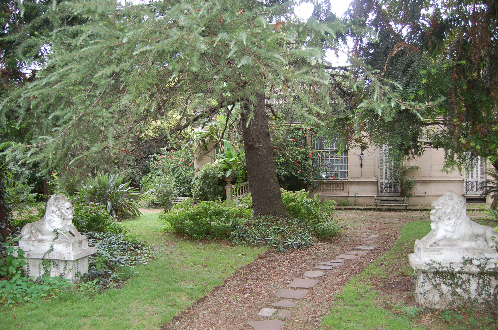

SECCION
Por Hugo Bento
Increíblemente, la histórica casona que construyó y fue lugar de residencia de Riziero Preti, fundador de la ciudad de Turdera, fue puesta a la venta. La propiedad ubicada en Avda. 9 de Julio 440, a pocos metros del estadio del club Temperley, fue declarada por ley provincial “Bien de Interés Histórico” en 2008 por el Senado y la Cámara de Diputados de la Provincia de Buenos Aires. A pesar de esta pomposa declaratoria, la Provincia le envió a los dueños una notificación de embargo por una deuda tributaria, según nos comentó Eliseo Preti, nieto del fundador de Turdera. En la casona vivían hasta hace unos años dos de las hijas del segundo matrimonio de Preti: Maria Asunción, de 94 años, e Inés, de 90, ambas amantes de la música clásica y muy apreciadas en el barrio. La residencia es conocida como la “Quinta de los leones” por las esculturas de dos leones de mármol que adornan su entrada. Fue construida por Preti en 1904 sobre un terreno de 8.320 metros cuadrados, con estilo italiano y el aspecto imponente que aún conserva. Su valor histórico está dado porque allí ocurrieron hechos relevantes para el devenir de la ciudad. Por caso, el 30 de enero de 1909 se colocó la piedra fundamental del pueblo, en una ceremonia que contó con la presencia del gobernador Dr. Tomás Martínez. Pero con el paso del tiempo, la construcción ha venido sufriendo graves deterioros, siendo el estado deplorable de los techos la muestra más visceral de su decadencia edilicia. “Es un monumento histórico que se está cayendo a pedazos. Estamos rogando que no llueva porque si no tenemos que dormir con paraguas o cambiar las camas de lugar”, indica Eliseo Preti, agregando que “en el último temporal se llovía más adentro que afuera, era infernal. Tomamos el café con leche en la cocina, con los pies en el agua”.